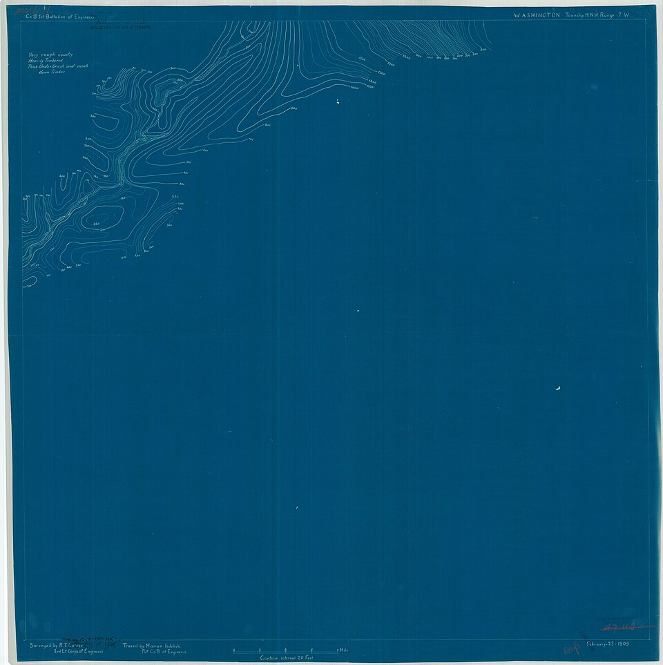
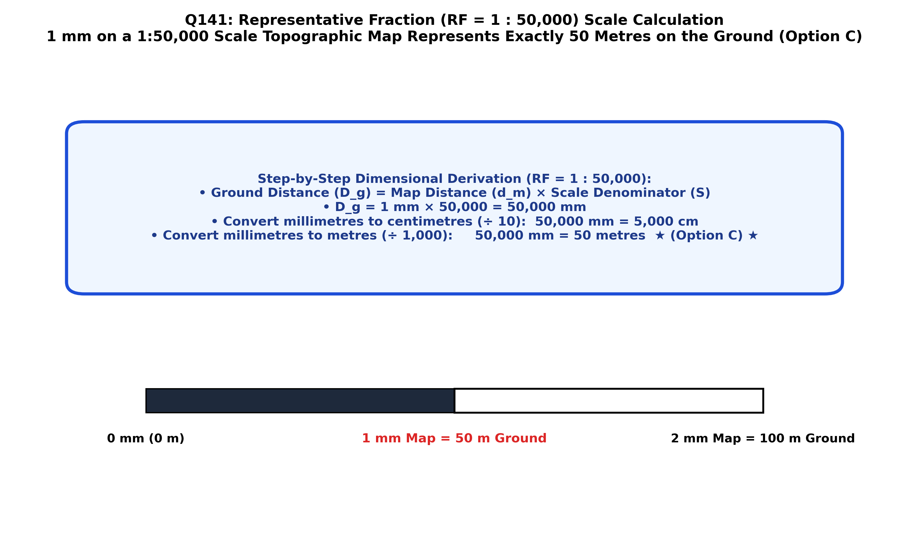
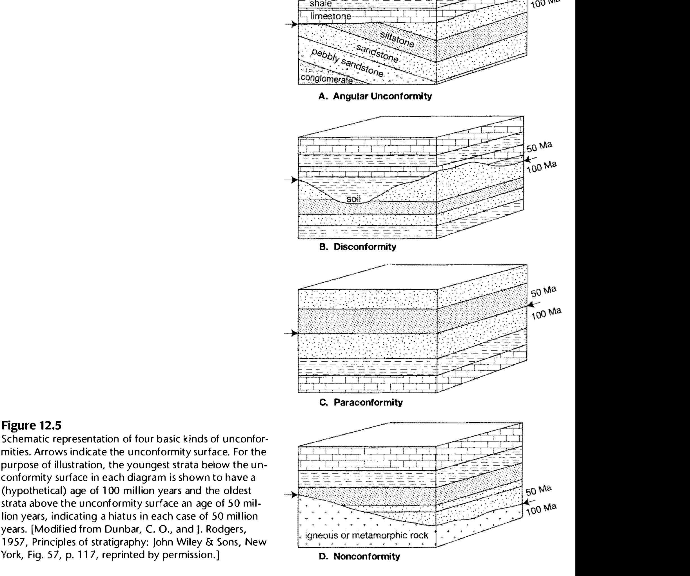
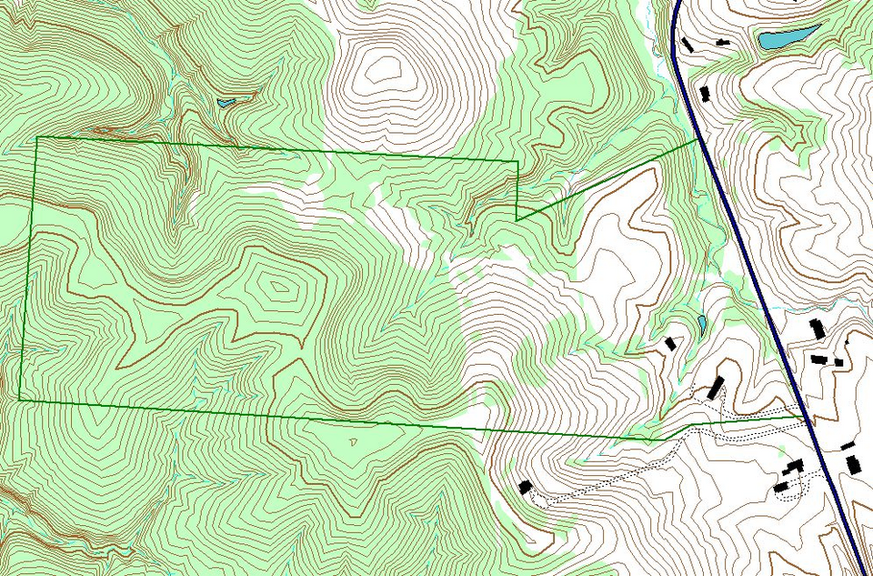
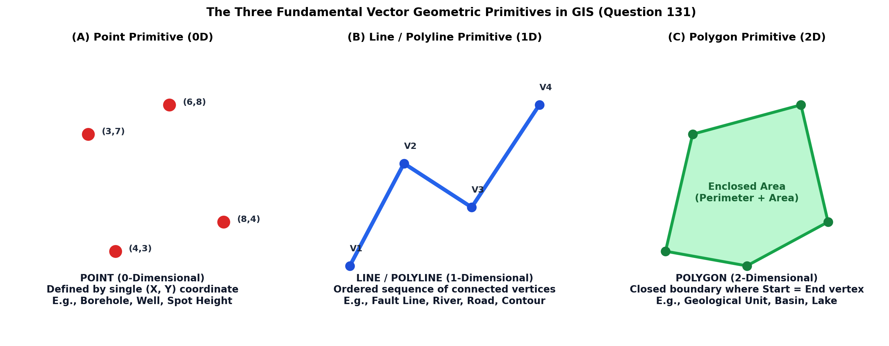

404 PRINCIPLES OF ENGINEERING GEOL such as roads, railways, villages, towns, Contour lines are commonly used to depict elevations on the topographic maps. "4 Contour Lines. A contour line is a line on a map which has the same. elevation above sea level along its entire length. Most maps show only the two horizontal dimensions. Contour lines are, however, an effective deviog F for representing the third dimension on a map. Some useful facts regarding contour lines are as follows.
1. Contour lines bend upstream.They form Vs that point up the valley.;
2. Near upper part of hills, contour lines form closures, 3. Contour lines are widely spaced on genile slopes and closely spaced on steep slopes. Evenly spaced contours indicate an unifonn slope.
4. Contour lines usually do not cross each other.
12.3 Outcrop
ge “e| Tote, 4 SEED”: as tot I a 1 AN 7 B A Pu iS) aT nor \\at fe A AA 77 q a at a
(a) Horizontal Ground.On horizontal ground the outcrops are always straight lines irrespective of the dip of strata.
(b) Undulating Ground.On undulating ground, the outcrop pattern varies with the dip of strata.
(i) Horizontal beds.In this case the outcrops run parallel to the contours. For a bed of constant thickness, the width of outcrop will be more where the ground slope is gentle and less where the ground slope is steep [Fig. /2./ (a)}.
(ii) Vertical beds.In this case the outcrops are straight lines irrespective of the topography [Fig. 12.1 (b)]. The width of the outcrop will be equal to the truc thickness of strata. () Inclined beds. In this case the outcrops are curved and they cut across the contours [Fig. /2./ (c)]. As a rule the smaller the dip, the more sinuous the outcrop; the higher the dip the more nearly do the outcrops approach straight lines. The width of the outcrop is controlled by the dip of strata and by the slope of the ground.
bare Pe mm BM 4 pee fie. n es rr Oe gills Wis 4 '
12.3.1 Rule of Vs HR - E
beds generally form a V-pattern, Ty, In a valley the outcrops of rock beds a ‘3 approximate value of dip can be determined by applying the “rule of 3 to these outcrops. 3 1, Ina valley, the outcrop of horizontal strata form a nV; the apex of which points upstream [Fig. 12.2 (a)]. However in case of the vertical beds, the outcrops run as straight lines and topography 4 has no control on it. 2, The outcrop of dipping beds also give a V-paltem in valleys. Gentle dips give rise to “long Vs" while steep dips produce “shor, Vs". q (a) When beds dip up the valley, the “WV” points upstream [Fig, 3 (b) When beds dip down the valley, cases arise. 4 (i) If the angle of dip is greater than the valley stope, the “Y" points downstream [Fig. 12.2 (c)]. 4 1 (ii) If the angle of dip is less than the valley slope, the “V" points upstream [Fig. 12.2 (a)]. re '
12.4 Outcrop Patterns and Geologic Structures
Geologic maps show various types of outcrop patterns. By studying these patterns the geologic structures such as folds, faults, unconformities” and igneous intrusions can easily be recognised. F Folds. In case of folding, the repetition of outcrop of a bed takes place. If folding is open, the two successive outcrops will show the reversal of dip direction (Fig. /2.7). Anticlines and synclines can be distinguished by the relative position of the older beds, Older beds occur in the core of anticlines and younger beds in the of synclines, Plunging anticlines and synclines are indicated by U-shaped outcrops. ga Faults. A vertical fault outcrops as a straight linc and inclined faults shaw changes in direction across the area, The dip of a fault plane can be in the same way as the dip of bedding planes. Dip faults cause of beds (Fig. 7.35), while strike faults cause elimination Meet an Of strata (Fig. 7.36 and 7.37). The up-throw and down-throw sides of a fault can be identified on maps by a er beds are found on the dow naps by applying the rule that young! -throw side and older beds on the up-throw side. by intersecting Co ca be recognised on geological maps faults or other Dagiuee sedimentary strata and by truncation of dykes, ‘hose of an uncontonnity ow angle faults may also vive patterns similar 10 GEOLOGICAL MAPS AND SECTIONS 407 Igneous Intrusions. Except sills which run parallel to the boundaries of sedimentary rocks, all other igneous intrusions intersect geological bouraries, Dykes usually run straight while batholiths have very irregular boundaries on the map.,
12.5 Geologic Cross Sections
For understanding the structure of a region, geological cross sections are vonsirucied. They are drawn from geological maps along certain given lines. These sections represent the conditions which are to be found at depth. Such subsurfucc conditions are inferred from the geology observed at the a ace, The factors which help in constructing the geological section are as follows.
(i) Contour lines.These help in drawing topographic profile along the line of section.
(ii) Structural attitude of strata.It is indicated by the component of dip computed along the line of cross section.
(ii) Thickness of each formation.This may be obtained from the drill hole records or computed with the help of scale of map, width of outcrop and the dip.
12.6 Determination Of Strike A
“strike line” line which joints two points of equal elevation on a particular bedding plane. In may also be defined as the direction-of the line formed by intersection of a bedding plane and horizontal plane. The strike lincs are always at right angles to the dip direction. The suike lines arc important because they show dip of inclined strata just as the contours show the topographic slope on the map. Similar to topographic contours they have altitudes (Fig. 12 3).
To draw astrike line for a particular boundary of a bed on a geological map, two points of equal elevation are located on it. These two points are EAIZONTAL PLANE CHAP) Pome i. a as os Ci ings glen anemge is hs er Pig 12.3. Strife dines on vat jredined Sonny 6 poe Meanofoo LN a: oe cad BEDDING PLANE 7 DIP ANGLE 28 q teem t ca) PLANE Fig. 124 (a) Determination of strike and dip on a map. (6) Determination of dip by graphical method.
Where a particular contour crosses the boundary at two places. The line formed by joining the points will give a strike line. Its altitude will be the same as that of the corresponding contour. Fig. /2.4 (a) shows two strike lines of levels 300 and 500 meters drawn for the boundary between rock beds P and Q. If the inclination of the bed is uniform throughout, all strike lines will be parallel.
_ Incases where a contour line does not intersect a given rock boundary at two places, the strike line is determined from any three points of known elevation on that boundary. matte The three points of known YD es, elevation are the points where 0 AS the contours cross the rock eS [ boundary (Fig. 12.5). These [&;&; FR Points are connected to forma [3-3 wy angle which joins the highest SAL RR SN and lowest elevation points, a Point is located which has the EEO " same elevation as the imer- Sore mediate comer of the triangle. Ss 12.5. Determination of Sinike.
GEOLOGICAL MAPS AND SECTIONS 409 A line drawn through two points of equal elevation will be a strike line Parallel to this another strike line of known elevation is drawn.
12.7 Determination of Dip
Each rock bed has two boundaries, the top boundary and the bottom boundary. To determine the dip of an inclined bed, any one boundary is chosen and two strike lines of different altitude are drawn on it. In Fig. 12.4 boundary between beds P and Q. The dip will be at right angles to the strike direction. In order to find the dip direction, a line is drawn at right angles to the strike lines. The “dip direction” will be from the strike of higher elevation to that of lower elevation. It is indicated by the arrow on the ty line.
To determine the “amount of dip”, the length of line is measured. The line represents the horizontal distance between the two strike lines. This distance is 400 meters according to the scale of the map. The difference in elevation between these strike lines is (500 m—300 m) 200 meters. It means that the bedding plane, after a horizontal distance of 400 meters falls 200 meters vertically. The dip angle is computed as follows. Vertical drop tan 8=7— 5 Horizontal distance tan! 200 or, 8= tan A050 or, Dip 26°34’ (27° approximately) Thus dip of the bedding plane is 27° in the direction NE. The dip can also be determined by the graphical method as shown in
12.8 Drawing Geologic Section
Ttis frequently required to construct a geological cross section across a geological map to show the most reliable picture of the subsurface strata. Gcologic sections are of two types (() normal sections, and (ii) oblique sections. Sections made in the direction normal to the strike are called “normal sections” whereas those constructed in the direction oblique to the strike are called “oblique sections”. The base line of the section should, in general, represent sea level. The steps involved in the construction of a geological section are as follows.
(i) Drawing a topographic profile 4 ip PRINCIPLES OF ENGINEERING geo, (ii) Determinauion of dip and strike: g (iii) Filling of geological details. GE 12.8.1. ‘Topographic Profile a Most geologic maps contain contours which depict the topog an the terrain. A strip of paper laid along the line of section and posilj consecutive contours are marked on it. These height spots are the terred on the base line from the strip of paper. Perpendiculars a relevant heights are raised at various points as per the scale of the pe tops of these perpendiculars are then joined by a free hand curve 'p, the topographic profile which now represents the ground surface, (a) shows the topographic profile constructed along line of the aa map shown in Fig. 12.6. Beolg ' iP 3 ~— dip av ——.
y 5 Na pup? 4 a t a 3 A E fe me *Q be to “bog a. wt 4 wes ‘: a Dipaz 2 500 my and and termination of Dip and Stri Hate determine the dip of a by ‘a nd Strike a a sees required. In Fig. 12.6 two strike lines of diff The line PR evel FesPectively for the MRS are the two ines a4 dip. This od is at right angles is th uundary between strata is from the Hilt cr zone strikes gives the dire The one is indicated by the 0 m elevation to the strike o PO the me in a the level of the bed ia is calculate zonal distance;, a calculated as Tollows, distance of 250 meters: 100 4 OLOGICAL MAPS AND SECTIONS an LS ie cB)
12.8.3 Filling of Geological Details
Another strip of paper is laid along the line of section on the map. The ‘rops of various strata are marked off. Any information regrading dip faults, etc.. are also recorded. This record is first marked on the base line then transferred to the surface profile. In order to do this, the various ts are projected up vertically to cut the surface profile. The geological ils are then added in the steps as shown below (a) First, all faults that are present along the line of section are inserted. They are usually represented as vertical lines running from the ground surface downward. The strata must be shown displaced along these faults [Fig. 12.8 (b)](6) Then stata are added. These are drawn from each point of outcrop and are shown dipping at angles computed for this purpose or slated on the map. This is usually done by drawing angles of dip first at the base line and then drawing parallel lines from the corresponding points at the surface profile [Fig. 12.7 (b)]() Anticlines and synclines are generally indicated on the map by. change of dip or by repetition of strata, They must be made in the PRINCIPLES OF ENGINEERING Soy 3 GE Gr Deck tag "at Se io By Hrs a at BOX aaa, oe Fe ta la Pe 1 “1 rook vs a&; PR! he, ais we SS METERS (a) a °o DIP a DIP DP as 35 4 20 ge a as 53, RS 3 SNS 7 oe strata eS 3 angle
i (iii) Geologie Structure. Give a bricf description of the various geologic structures present in the area, (a) In case of inclined beds, give the amount and direction of dip. 1 (b) In case of folds, give the direction of axis and the nature of folds, (c) In case of faults, give their nature, direction and down-throw, d) In case of an unconformity, give the number of beds present in each series of rocks and also describe their structure.
(e) In case of an igneous body, give its nature and geographical location. () Geologie History. Describe in brief the geologic history of the area by shuwing periods of sedimentation, uplift, submergence, erosion, igneous intrusion and sequence of faulting. Discuss the relative ages of folds, faults, and igneous bodies.
example 12.1. For an illustration, let us describe the map shown in Fig. The ground surface of the area is a valley which is sloping in the SE ion. Here seven rock beds are exposed. The oldest bed is ‘S* and the est is ‘G’. 7 here is an angular unconformity which separates the older series of from the younger series. The beds of the younger series dip with an of 20° in the NW direction, while those of the older series series are lin a syncline. The axis of the fold is running in the NE-SW direction. t asymmetrical fold as the dip of the two limbs are unequal. The beds older series are traversed by a transverse fault extending NW-SE. The of the fault is 100 meter and the down-throw side is towards cast. he sequence of events experienced by the area are as follows, ‘#) Uplifting and emergence af these beds above sea level. Folding and faulting.
(iii) Erosion of the region.q Submergence under water followed by deposition of three more (v) Uplifting and tilting of the entire region(vi) Erosion of the region (0 give present topography. 12.10, RELATIVE AGES OF BEDS a (i) In case of an unconformity, younger beds overlap alder rocks, (ii) The outcrops of dipping beds in a valley will always point upstream unless the dip is in the same direction as the slope of the valley, and at a greater angle. In this case progressively older beds occur in the upstream direction.
(iii) In anticlines the older beds outcrop toward the centre of the fold and in synclines the reverse applies. a (iv) Out of two adjacent beds outcropping on opposite side of a fault, the younger bed is always on the down-throw side. 4 () When igneous intrusions or faults cut through older rocks, the are assumed to be younger than the strata they a We THICKNESS OF BEDS a ‘The thickness of horizontal and vertical beds can be obtained direct from the geologic map. Horizontal beds run parallel to the topographi contours and therefore, their thickness can be determined by interpolation For example, in Fig. 12.1 (a), the thickness of bed Q is 20 meters. In cas of a vertical bed, such as a dyke, the perpendicular distance from one cont to the another on the map will give the thickness.
The thickness of an inclined bed can be determined in three ways from geologic maps and sections, (i) from width of outcrops, and () {re bore hole data. 11.1. From Geologic Maps and Sections In order to determine the thickness of a bed on a geologic map of the bed is selected and a strike line is drawn. This strike li enone so that it cuts the other contact at a different level. T the eel a two levels will give the thickness of the bed bed Q cuts its in Fig. 12.4 the 300 m strike of one contact of 3 will be 200 m. fer contact at 500 m level. Hence its vertical thickné The thickness of a be: constructed along th oe va also be determined from a geologic see of beds is measured directly strata. In this case the this ircetly on such a section. cS 12,11.2, From Width of Outerop The width of outcrop of a bed depends on thrce fact 4 ie 5 lors (1) the thickness of the bed, (ii) the angle of dip, and ( the 1 hi rectloae ‘topographic slope and its (a) On Horizontal Ground. If the thickness of a bed is constant, the Width of outcrop varies with the dip angle. I is minimum Shen the bed is vertical, being in fact equal to the true thickness of the bed, and as the dip decreases the width of outcrop increases. In
(c) Ground sloping in the same direction as the dip. (8) Slope of Ground Opposite Dip. In Fig, {2.9 (b) the strata dip at an angle ‘6* towards cast and the ground slopes at an angle to the west. The thickness of a bed whose width of outcrop is ‘ab’ can be calculated from the following equation. True Thickness bc ab x sin (8 i) (c) Ground Sloping in the Same Direction as Dip. In Fig. 12.9 (c) the slope of ground and the dip of strata both are in the same direction, the angles heing ‘i* and ‘6’ respectively. The true thick- ness of a bed whose width of outcrop is ‘ab’ can be calculated as r follows.
True Thickness be ab x sin (0 i) PRINCIPLES OF ENGINEERING BOREHOLE Example 122. exposed. at ra 4 bed of sandstone IS SHALE 2 a 7 ound and The slope of the groune rete 3 the dip of the bed arc 10° W oes a and 20° E respectively. If the Pep“? ftom ran width of outcrop is 60 vale? determine the true thickness O! a Dip of sandstone bed de 3 Slope of the ground SHALE E27 Thus the dip and the slope ip. 12.10, Determination of thickness of are in opposite directions. from bore hole data.
Truc Thickness 3 Width of outcrop x sin (8 i) 30 meters. 11.3. From Bore Hole Data 4 In Fig. 12.10 inclined strata are traversed by a vertical bore hole. case the true thickness of a bed can be calculated from the ft equation. a True Thickness CD= cos “here is the thickness of the bed in the bore hole and 0 is the dip
12.12 Dip and Strike
PROBLEMS 1 Strike and Dip by Three Point Method points ra 4) tently dipping beds can be determined fron Plane must he identifier elevations on the same bedding planc. The b directions between th “sriainty at each outcrop. The distam directions can be Tee points should also be known, the dis! the graphical construction from the map of the aren. Fig, 12.11 ill has the sane eleyayjgn vet find a strike tin int D is located vation as the he, a point D is a cf ' Pad 1 ' I--* 4 ' 1 %, Fe a " ' Me a & tee. SS aw “fog 1 Ne MID re 1 hid fig “Sleeaad 4 my OS an 4 Pew *htekne?
i 4 SS. ie Scale a
x a aa Qevel toon)] fe Xe, 7 rs ‘Y Se. 4 id, "y Dipsyo* Surface. 4
be the strike line of 400 by joining points of 400 0 The direction of dip will be 4 right angles to the strike, from the strike line of higher altitude to that of lower altitude. It is indicated by the arrow head along the line ST. The dip The amount of dip of the limestone béd is determined by a simple graphical construction shown in Fig. 12.42 (b). The horizontal side of the right angle triangle is cqual to the perpendicular distance ST between tie two strike lines of different altitudes. The vertical side 7M represents the difference in elevation between the two above said strike lines. The dip angle of the limestone bed as measured from the right angle triangle, is 30° in the Example 12.5. A, are four stations at the comers of a square of side 900 meters on level ground, B is due west of A and C is due south of B. A coal.seam is met with in bore holes that are put at A, B and C at depths of 200 m, 50 m and 100 m respectively. Determine the dip of the coal seam. At what depth will the seam occur at D.
Solution, Fig. /2./3 illustrates the location of four stations A, on the level ground surface. At stations A, B, and C a coal seam is struck FAS y, ‘DIP 10”. bot Scale
Example 12.6, In the map shown in Fig. 12.14, A, B and Care the threc stations where a coal seam is met with in bore holes at depths of 151 of the N(a so -Ko)= 200m, A ris gS os 1.
160) 32 ' Bes a 4 t oe wa HORILONTAL SURFACE 4 Fig, 12.14. Bore hole problem.
Solution.The altitudes of the coal scam at the stations A, by subtracting the value of depth from the value of correspond ing contour on which the stations are situated. Thus the altitudes of the fib iced will be (300 12 ie respectively. Now the triangle ABC is constructed in Fig. 12.14. The point is located on the BC li seam will occur at the altitude of 159 PBS Nite It car be Jocated with the help!
ing equation, Bs nc. terence in elevation between A and si Bs Bc. ps2 SC Now A and S are the ( points where the coal seam occurs at the same altitude. A line drawn connecting A and S will give a strike line of 150 m. Then other strike lines are drawn and the dip is determined. The dip of the coal scam is 10° in the direction S27°E.
12.12.2 Determination of Apparent Dip from True Dip
If the truc dip of a bed is known, the apparent dip in a given direction can easily be worked out with the help of the following relation. tan a tan 0 x cas where ot is apparent dip, is true dip and B is the horizontal angle between the true dip and apparent dip directions. It may be noted that such problems can also be solved by the graphical method.
Example 12.7. A coal seam dips at 11° in the direction due north. What will be its apparent dip in the direction N60°E. Solution, tan or, ' 5°35’ (Apparent dip) Graphical Method The dip of coal scam 11° " cot 11° 5.144 or 5.0 (Approximately) Hence, the dip of coal seam 1 in 5. 8 [p—S*#!*£ Draw a line from a point ‘Q” in the direction due north (Fig. 12.25) and make §| A OB equal to 5 units. BC is a perpendicular 3 set drawn to OB. It represents the strike direc- we tion of the coal scam. Them a line is 0 drawn in the direction N6O°E which meets —_ Fig. 12-15.Determination of BCac. is measured which is found apparent dip from true dip. to be 10 units. Hence the valuc of the required apparent dip is in 10, or 5°, Example 12.8. The truc dip of a coal seam is 14° in the direction due south. Find the direction in which the apparent dip will be 8°. Solution. I tan o tan 8
tan or, cos 0.14 fan 14° 0,25 or, cos 0.56 or, B=56° a Hence, the direction of apparent dip will be S56°W cf SS56°E. Graphical Method 4 (i) The true dip of the coal 7 Hence, true dip in 4. Se A (ii) The apparent dip of the -)-* 1... a coal seam 8° a y -cot 8°= 7.11 a Hence, apparent dip Fig. 12.16. Determination of direction lin7 of apparent dip. a Draw a line from a point ‘O° in the N-S direction and, make OP equal to 4 units (Fig. /2.16). Draw a perpendicular to OP. It represents the strike direction of the coal seam. Now a point Q is located such that is equal to 7 units. The direction of the line is the required direction. There are two directions along which i
12.12.3 Determination of True Dip a
It is not always possible to measure true dip in the field. It is easier to measure apparent dips of a bed along two directions and then calculate true a dip from these. a Example 12.9, Two apparent dips of a coal scam are 11° in the direction a truc dip. Solution. a () In the direction N5O°W, the apparent dip 11° a cot 11°=5.14 or 5.0 (Approximately) q Hence, the apparent 4 dip 1in 5, 7 4a 4 (i) In the direction a ar Parent dip 17° io 4 Cot 7? 3.2707 3.3 y AT 3 (Approximately) Be dip 1 in 3.3 po" AS shown in Fig. 12.17, tS 5 from a central point Q make Fig. 12.17, Determination of true dip “i from apparent dips. QA 5 units long in the direction °W, and OB 3.3 units long in the direction N60°E, Connect A and B. The line AB will give the direction of strike of the coal seam. Dram perpendicular to AB from 0. Measure which is found to be 2.2 units. The angle is also measured which comes to be 13°. Thus the true dip of coal seam is in 2.2, or 24° in the direction NI3°E.
12.13 Completion of Outcrops
areas where outcrops of rock beds are not enough to permit the drawing of rock boundaries, geometrical analysis of the map is done. It helps in completing the concealed boundaries of inclined beds. It also serves as a check on the field work.
If a bed outcrops on the ground surface at three points that lie at different elevations, its boundary on the map can be traced with the help of the three point method (section 12.12).
Example 12.10. In the map shown in Fig, 12.18, the lower surface of a 50 meter thick limestone bed is exposed on the ground surface at three points A, B, and C. Complete its outcrop.
eaten "50 Li ' Visa A teak ate" ~O, oe see. on 1 t ty 7 se 5 se 1 c% Sutton 3 e 5 oe A we oe x 1 3, wes o~, 3
Solution.The three points A, 8 and C where the lower boundary of the limestone outcrops, lie at different elevations. The elevations of these points are 600, 500 and 550 meters respectively. For drawing the geologic boundary, the first step is to draw strike lines from these points by the “three point 424 PRINCIPLES OF ENGINEERING.
method”. As the contour interval on the map is 50 m, construct additionly strike lines at the interval of $0 meter throughout the map (Fig. 12.79), Leese OE SS ea ES Seer ORR Sgt SES ' PO EINES OAT ET SINS, pees ( Sam NA Cail, se ates as ere mass so STRIKE Feat
0) sales at right angles to the true dip. Since the beds through in the direction NSOME gs eye com our Hine drawn GEOLOGICAL MAPS AND SECTIONS 425 or aa A oF TIN a a oneal a a A A & W i) an) Ps a a ESS 3-0 x E ie ss Panes
(iii) The horizontal distance for the strike interval of 50 meters is determined by the following relation. Horizontal distance (dip angle) 200 meter.
(iv) Other strike lines are drawn at the spacing of 200 m (2.0 cm. as per the scale) on the map parallel to the 700 m. Strike line.
(v) The intersection points of the strike lines and the topographic contours of equal values are marked. The curved line formed by joining the these points will be the race of the contact between the shale and sandstone beds (Fig. £2.20).
- True Stratigraphic Thickness ($t$): From outcrop width $W$ on flat ground: $t = W\sin\theta$. From vertical borehole depth $D$: $t = D\cos\theta$.
- Three-Point Problem: Connect Highest ($H$) and Lowest ($L$) bed elevations; interpolate point $P$ matching Intermediate ($I$) elevation along $HL$. Line $IP$ is the True Strike Line, and dip is $\tan\theta = \frac{\Delta h}{d_\perp}$.
Chapter Review Questions (K. M. Bangar)
1. Explain briefly the characteristics of a geological map. Describe how a geological section can be drawn across a geological map.
2. What is an outcrop How does the pattern of outcrop of strata vary with the dip and surface relief.
3. Describe in brief the various criteria for the recognition of folds, faults and, unconformities on geological maps.
4. Draw a geological cross section of an area shown in Fig. 12.8 Give a brief account of the geological history of the area.
a pRINCIPLES OF ENGINEENING GEOLGE S. Determine the thickness of a shale that sire ene He E the direction due south. The width of CURT 4% ' direction is 125 meters. The region is of" se SW and dips 455640 6. In region of na relief a conslomersle OK the surface 1 width of the outcrop as measured 21008 N se meters, Calculate thickness of the conglomerate®- ical wick a and shows a vertical thickness 1 has been bored through a0 dip at 1 in 3 Find the true thickness of the coal seam, an sloping ground is 20 me si of a limestone bed on and the dip of the strata are in the same direction their amounts being 25° and 10° respectively. Calculate (he thickness of limestone a 9, The top of a shale bed outcrops at an altitude of 200 meters. A second qufe of this horizon lies at a distance of 800 meters due north at an altitude of meters, and a third oulerop lies at a distance of 500 meters due west from first outcrop at an altitude of 400 meters. Determine the strike and dip of a shale bed. BY 5 10. The top of a clay bed outcrops at two places is at a distance 3 240 m respectively. The same bed is struck in a bore hole at a depth of 7 the dip of the clay bed. 4 the hore holes are the same. Find the dip af the coal seam. 4 3 12. Acoal scam is met with in three bore holes A, B and C. The surface level Ps bore holes are 22 m, 14 m and 30 m, and the depth of bore holes are 4¢ Calculate the dip of the coal seam 7 13, A sandstone bed has a true dip of 30° in the direction N45°W, Calculal a 14, The true dip of a coal seam is in the direction N30° ind its app dip in the direction N25°E. hen " WY Fin a 1S. The two apparent di E [4 ips of a |; oe of f 5 true dip,:
16. The apparent dip of sandstone is 6° in th a "7 the direction S37, Determine dip of th gene Sea a F dip of the sandstone bed. 4 E
Visual Reference Gallery (Clean Color Diagrams & Specimens)
Supplementary full-color diagrams from Winter, Perkins, Fossen, Boggs and high-resolution USGS/Wikimedia photographs replacing scanned textbook drawings.





